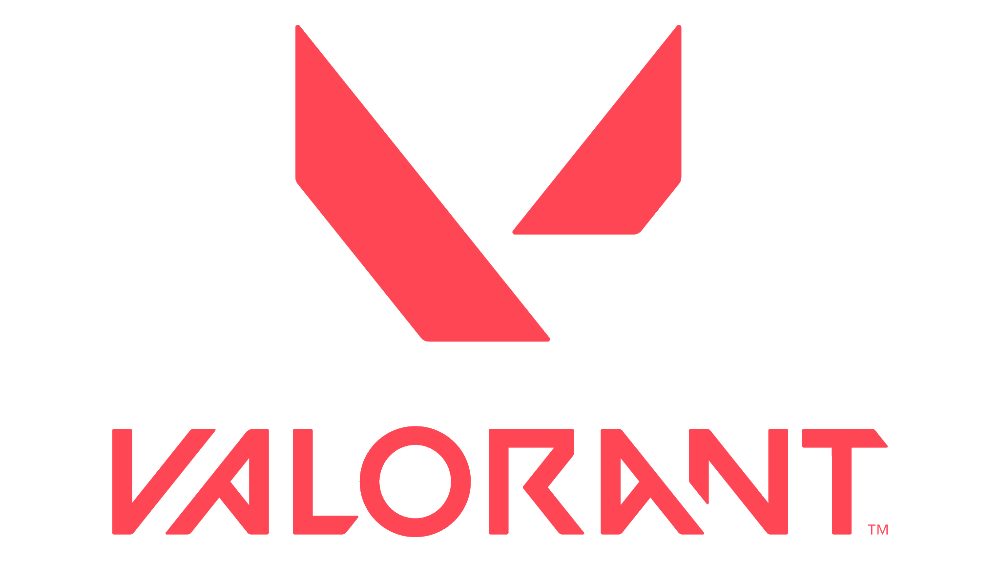

이미 라이엇 게임즈가 FPS 게임을 개발중이라는 루머는 계속 떠돌고 있었다. 이때 같이 떠돌던 격투 게임은 2019 EVO에서 직접 개발중임을 공개하여 공식적으로 확인이 되었지만 FPS 게임에 대한 소식은 없었다. 그러다가 미국 HBO 드라마 '볼러스'의 에피소드 중 라이엇 게임즈 본사를 방문하는 한 장면에서 현대식 총을 들고 있는 캐릭터가 등장하며 암시되었고, 리그 오브 레전드 10주년 Riot Pls에서 공개됐으며 레전드 오브 룬테라, 리그 오브 레전드: 와일드 리프트 등과 함께 공개됐다.# 이 생방송에서 공개한 게임들 중 유일하게 리그 오브 레전드 IP를 사용하지 않은 독자 세계관이며 근미래의 지구가 배경이라고 한다. 영상에서 나오지만 라이엇 게임즈는 현재 FPS 장르의 고질적인 문제라고 할 수 있는 핑 문제와 핵 문제에 대해 집중적으로 보완하는 방법으로 개발중이라고 밝힌다. 라이엇 게임즈 최고 경영자(CEO)인 Nicolo Laurent는 프로젝트 A에서 능력은 적팀을 직접 죽이는 용도가 아닌 전술적인 방법을 활용하는 쪽이라고 밝혔다. 또한 e스포츠 컨설턴트인 Rob Breslau[2]에 따르면 프로젝트 A는 수년간 개발중이었으며 전, 현직 카운터 스트라이크 선수와 전직 오버워치 선수들을 상대로 2019년 중반에 테스트를 진행한적이 있었는데 테스트한 전문가들에 따르면 만장일치로 정말 재미있었다고 한다.# 프로젝트 A를 테스트하기 위해 2019년 중반에 라이엇으로부터 초대를 받은 한국계 미국인 전 카운터 스트라이크 선수였던 Rambo[3]는 테스트 당시 게임상태에 대해 높이 평가했고 그 당시 상태로 발매되었어도 만족했을 것이라는 언급을 했다. 또한 테스트한 게임 상태를 봤을 때 출시는 그리 멀지 않았다고 예측했으며, 현재 라이엇의 신규 게임 프로젝트 중 유일하게 소개 영상이 공개되면서 레전드 오브 룬테라, 와일드 리프트를 제외하면 가장 먼저 발매가 될 가능성이 높은 게임이다.# 라이엇 내부에서는 프로젝트 아레스(Project Ares)라고 부른다. 이후 라이엇 게임즈가 VALORANT라는 이름을 상표권 등록했으며 트위치 채널과 트위터 계정이 발견되어 VALORANT가 정식 명칭으로 확정되었다. 또한 VALORANT에서 T를 빼면 리그 오브 레전드의 지명인 발로란 대륙과 동일한 단어가 된다.[4]
